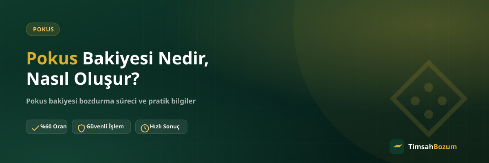

Pokus bakiyesi, birçok kullanıcının hesabında birikip ne yapılacağı bilinmeyen bir tutar olarak duruyor. Bu bakiyenin nereden geldiğini ve hangi durumlarda oluştuğunu bilmek, hem doğru şekilde kullanmak hem de kullanmayacaksan değerlendirmek için önemli. Bu yazıda Pokus bakiyesinin ne olduğunu, nasıl biriktiğini ve elinde kalan bakiyeyle ne yapabileceğini anlatıyoruz.
Pokus Bakiyesi Nedir?
Pokus, kendi ekosistemi içinde geçerli olan bakiye tabanlı bir hizmet sunar. Yani yüklenen veya kazanılan tutar bir kod ya da tek kullanımlık PIN şeklinde değil, hesap üzerinde tutulan bir bakiye olarak durur. Bu, Razer Gold veya iTunes gibi kod tabanlı hizmetlerden temel bir farktır: kod tabanlı hizmetlerde tek seferlik bir kod bozdurulurken, Pokus'ta hesaptaki bakiyenin tamamı ya da bir kısmı değerlendirilebilir.
Pokus Bakiyesi Nasıl Oluşur?
Bakiye genellikle hesaba yükleme yapılması ya da platform üzerinden gerçekleştirilen işlemler sonucunda birikir. Kullanıcı bir defada ihtiyacından fazla yükleme yapabilir, ya da yüklenen tutarın bir kısmı harcanmadan hesapta kalabilir. Zamanla bu artıklar birikip fark edilmeyen bir bakiyeye dönüşebilir. Bazı kullanıcılar hesabı uzun süre kullanmadığında da bu bakiyenin orada durduğunu fark etmez.
Pokus Bakiyesi Nerelerde Kullanılır?
Pokus bakiyesi, yüklendiği ekosistem içinde geçerlidir ve bu ekosistemin dışında harcanamaz. Yani bakiyeyi başka bir platformda, farklı bir uygulamada veya nakit olarak doğrudan kullanmak mümkün değildir. Bu sınırlama, bakiyeyi aktif olarak kullanmayan kişiler için "elde kalan ama değerlendirilemeyen" bir tutar sorunu yaratır.
Kullanılmayan Pokus Bakiyesi Neden Birikir?
Bir platformu bırakmak, ilgi alanının değişmesi ya da hesaba bir daha girmemek gibi nedenlerle bakiye kullanılmadan hesapta kalabilir. Özellikle hediye olarak gelen ya da kampanya döneminde yüklenen tutarlar, kullanıcı platformdan uzaklaştığında unutulan bakiyeler arasına girer. Bu durumda bakiye ne aktif olarak kullanılır ne de bir yere aktarılabilir, sadece hesapta durur.
Pokus Bakiyesi Bozdurmak Güvenilir mi?
Bakiye tabanlı hizmetlerde bozdurma işlemi, kod tabanlı hizmetlere göre biraz daha esnektir çünkü kısmi bozum mümkündür. Güvenilir bir bozum hizmeti seçerken üyelik, form doldurma ya da hesap şifresi istenmemesine dikkat etmelisin; bu tür talepler işlemin resmi olmayan bir kanaldan yürütüldüğüne işaret edebilir. Pokus bozdurma sürecinde tek ihtiyacın, güncel bakiyeni gösteren okunaklı bir ekran görüntüsü.
Pokus Bakiyesi Bozdurmadan Önce Nelere Dikkat Etmeli?
Bozdurmadan önce bakiyenin güncel ve doğru göründüğünden emin olmak gerekir. Ekran görüntüsü alırken tutarın net okunur olması, işlemi hızlandırır. Ayrıca oranların zamanla değişebileceğini unutmamak ve işlem öncesi güncel oranı teyit etmek, hem senin hem karşı tarafın aynı bilgiye dayanmasını sağlar.
Pokus Bakiyesi Nasıl Bozdurulur?
Süreç oldukça basit: WhatsApp hattımızdan yazarsın, güncel bakiyeni gösteren ekran görüntünü paylaşırsın, oranı teyit edersin ve onay sonrası ödeme WhatsApp üzerinden görüşülen yöntemle yapılır. Üyelik, form ya da kimlik belgesi istenmez; hesabına erişim de talep edilmez. Güncel oranı ve süreçle ilgili detayları Pokus bozdurma sayfamızdan ya da doğrudan WhatsApp'tan öğrenebilirsin.
Pokus Bakiyesi ile Kod Tabanlı Hizmetler Arasındaki Fark Nedir?
Pokus gibi bakiye tabanlı hizmetlerle Razer Gold veya iTunes gibi kod tabanlı hizmetler farklı mantıklarla çalışır. Kod tabanlı hizmetlerde elinde tek kullanımlık bir kod veya PIN bulunur ve bu kodun tam değeri tek seferde bozdurulur; kısmi bozum söz konusu değildir. Pokus bakiyesinde ise durum farklıdır: hesabında biriken tutarın tamamını bozdurmak zorunda değilsin, istediğin bir kısmını bozdurup kalanını hesapta bırakabilirsin. Bu farkı bilmek, hangi hizmete hangi bilgiyle başvurman gerektiğini netleştirir.
Kullanılmayan Pokus Bakiyesini Değerlendirmenin Avantajı
Hesapta duran ve harcanmayan bir bakiye, kullanılmadığı sürece hiçbir değer üretmez. Bakiyeyi nakde çevirmek, o tutarı ihtiyaç duyduğun bir alanda kullanabilmeni sağlar. Özellikle platformu artık aktif kullanmıyorsan veya bakiyenin bir kısmı kampanya ya da hediye yoluyla gelip senin için gereksiz kaldıysa, bu bakiyeyi değerlendirmek elde tutmaktan daha pratik bir seçenek olur.
Pokus Bakiyesi Bozdurma İşlemi Ne Kadar Sürer?
Süreç, bakiye ekran görüntüsünün paylaşılması ve oranın teyit edilmesiyle başlar; onay verildikten sonra ödeme adımına geçilir. Kesin bir süre vermek yerine, işlemin bilgi paylaşımı ve teyit adımlarının ne kadar hızlı ilerlediğine bağlı olduğunu söylemek daha doğru olur. Güncel süreç hakkında net bilgiyi WhatsApp hattımızdan teyit edebilirsin.
Pokus Bakiyesi Hesabına Erişim Verilmesi Gerekir mi?
Hayır. Bozum işlemi boyunca hesabına erişim istenmez, şifre ya da giriş bilgisi talep edilmez. Sen sadece güncel bakiyeni gösteren bir ekran görüntüsü paylaşırsın, işlem bu bilgi üzerinden ilerler. Hesabına erişim isteyen ya da SMS doğrulama kodu talep eden bir talep gelirse bu, resmi sürecin dışında bir girişim olarak değerlendirilmeli ve bilgi paylaşılmamalıdır.
Pokus Bakiyesi ile Başka Bir Hizmeti Aynı Anda Bozdurabilir misin?
Elinde Pokus bakiyesinin yanı sıra bir Razer Gold kodu ya da Paycell bakiyesi de varsa, hepsini tek mesajda toplu şekilde bildirmek süreci hızlandırır. Her birini ayrı ayrı, aralıklarla göndermek yerine bilgileri bir arada paylaşman hem senin hem karşındaki hattın işini kolaylaştırır. Bu şekilde tek görüşmede birden fazla işlem için oran teyidi alabilirsin.
Sık sorulan sorular
İlgili Yazılar
- Mobil Ödeme Bakiyesi Nedir, Nasıl Oluşur?
- Nakit Bozum Nedir, Nasıl Çalışır?
- En Güvenilir Mobil Ödeme Bozdurma Sitesi Nasıl Seçilir?
Elinde kullanmadığın bir Pokus bakiyesi varsa, bunu değerlendirmenin en pratik yolu güvenilir bir kanaldan bozdurmak. Güncel oranı ve süreci öğrenmek için WhatsApp hattımıza yazarak hemen başlayabilirsin.